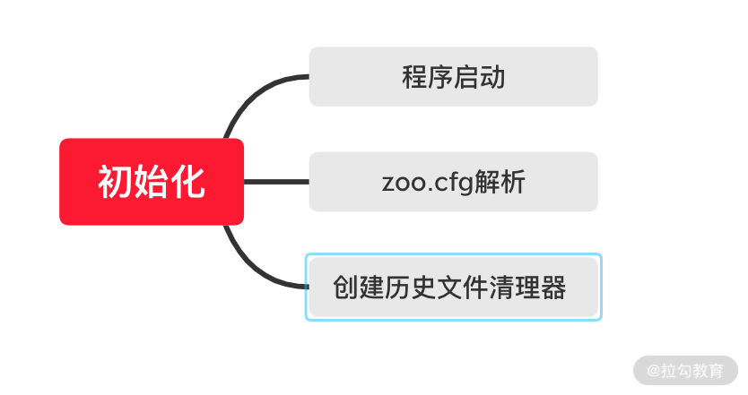
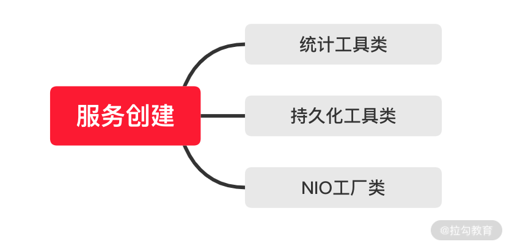
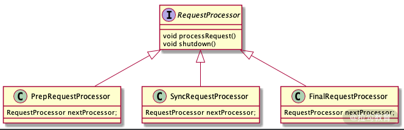

- 00 开篇词：选择 ZooKeeper，一步到位掌握分布式开发.md.html
- 01 ZooKeeper 数据模型：节点的特性与应用.md.html
- 02 发布订阅模式：如何使用 Watch 机制实现分布式通知.md.html
- 03 ACL 权限控制：如何避免未经授权的访问？.md.html
- 04 ZooKeeper 如何进行序列化？.md.html
- 05 深入分析 Jute 的底层实现原理.md.html
- 06 ZooKeeper 的网络通信协议详解.md.html
- 07 单机模式：服务器如何从初始化到对外提供服务？.md.html
- 08 集群模式：服务器如何从初始化到对外提供服务？.md.html
- 09 创建会话：避开日常开发的那些“坑”.md.html
- 10 ClientCnxn：客户端核心工作类工作原理解析.md.html
- 11 分桶策略：如何实现高效的会话管理？.md.html
- 12 服务端是如何处理一次会话请求的？.md.html
- 13 Curator：如何降低 ZooKeeper 使用的复杂性？.md.html
- 14 Leader 选举：如何保证分布式数据的一致性？.md.html
- 15 ZooKeeper 究竟是怎么选中 Leader 的？.md.html
- 16 ZooKeeper 集群中 Leader 与 Follower 的数据同步策略.md.html
- 17 集群中 Leader 的作用：事务的请求处理与调度分析.md.html
- 18 集群中 Follow 的作用：非事务请求的处理与 Leader 的选举分析.md.html
- 19 Observer 的作用与 Follow 有哪些不同？.md.html
- 20 一个运行中的 ZooKeeper 服务会产生哪些数据和文件？.md.html
- 21 ZooKeeper 分布式锁：实现和原理解析.md.html
- 22 基于 ZooKeeper 命名服务的应用：分布式 ID 生成器.md.html
- 23 使用 ZooKeeper 实现负载均衡服务器功能.md.html
- 24 ZooKeeper 在 Kafka 和 Dubbo 中的工业级实现案例分析.md.html
- 25 如何搭建一个高可用的 ZooKeeper 生产环境？.md.html
- 26 JConsole 与四字母命令：如何监控服务器上 ZooKeeper 的运行状态？.md.html
- 27 crontab 与 PurgeTxnLog：线上系统日志清理的最佳时间和方式.md.html
- 28 彻底掌握二阶段提交三阶段提交算法原理.md.html
- 29 ZAB 协议算法：崩溃恢复和消息广播.md.html
- 30 ZAB 与 Paxos 算法的联系与区别.md.html
- 31 ZooKeeper 中二阶段提交算法的实现分析.md.html
- 32 ZooKeeper 数据存储底层实现解析.md.html
- 33 结束语 分布技术发展与 ZooKeeper 应用前景.md.html
- 捐赠
07 单机模式：服务器如何从初始化到对外提供服务？
本课时我们开始学习 ZooKeeper 服务器的启动管理与初始化相关的内容。
通过基础篇的学习我们已经掌握了 ZooKeeper 相关的基础知识，今天我们就开始进阶篇中的第一节课，本节课主要通过对单机版的 ZooKeeper 中的启动与服务的初始化过程进行分析，来学习 ZooKeeper 服务端相关的处理知识。现在我们就开始深入到服务器端看一看 ZooKeeper 是如何从初始化到对外提供服务的。
启动准备实现
在 ZooKeeper 服务的初始化之前，首先要对配置文件等信息进行解析和载入。也就是在真正开始服务的初始化之前需要对服务的相关参数进行准备，而 ZooKeeper 服务的准备阶段大体上可分为启动程序入口、zoo.cfg 配置文件解析、创建历史文件清理器等，如下图所示：

QuorumPeerMain 类是 ZooKeeper 服务的启动接口，可以理解为 Java 中的 main 函数。 通常我们在控制台启动 ZooKeeper 服务的时候，输入 zkServer.cm 或 zkServer.sh 命令就是用来启动这个 Java 类的。如下代码所示，QuorumPeerMain 类函数只有一个 initializeAndRun 方法，是作用为所有 ZooKeeper 服务启动逻辑的入口。
package org.apache.zookeeper.server.quorum
public class QuorumPeerMain {
...
public static void main(String[] args) {
...
main.initializeAndRun(args);
...
}
}
解析配置文件
知道了 ZooKeeper 服务的程序启动入口，那么我们现在就分析 ZooKeeper 的启动过程。在 ZooKeeper 启动过程中，首先要做的事情就是解析配置文件 zoo.cfg。在之前的课程中我们提到过，zoo.cfg 是服务端的配置文件，在这个文件中我们可以配置数据目录、端口号等信息。所以解析 zoo.cfg 配置文件是 ZooKeeper 服务启动的关键步骤。zoo.cfg 文件的具体解析过程会在后边的课程中专门展开讲解，这里我们只需要知道在服务启动的过程中会进行配置文件的解析。
创建文件清理器
文件清理器在我们日常的使用中非常重要，我们都知道面对大流量的网络访问，ZooKeeper 会因此产生海量的数据，如果磁盘数据过多或者磁盘空间不足，则会导致 ZooKeeper 服务器不能正常运行，进而影响整个分布式系统。所以面对这种问题，ZooKeeper 采用了 DatadirCleanupManager 类作为历史文件的清理工具类。在 3.4.0 版本后的 ZooKeeper 中更是增加了自动清理历史数据的功能以尽量避免磁盘空间的浪费。如下代码所示，DatadirCleanupManager 类有 5 个属性，其中 snapDir 和 dataLogDir 分别表示数据快照地址以及日志数据的存放地址。而我们在日常工作中可以通过在 zoo.cfg 文件中配置 autopurge.snapRetainCount 和 autopurge.purgeInterval 这两个参数实现数据文件的定时清理功能，autopurge.purgeInterval 这个参数指定了清理频率，以小时为单位，需要填写一个 1 或更大的整数，默认是 0，表示不开启自己清理功能。autopurge.snapRetainCount 这个参数和上面的参数搭配使用，这个参数指定了需要保留的文件数目，默认是保留 3 个。
public class DatadirCleanupManager {
private final File snapDir;
private final File dataLogDir;
private final int snapRetainCount;
private final int purgeInterval;
private Timer timer;
}
服务初始化
经过了上面的配置文件解析等准备阶段后， ZooKeeper 开始服务的初始化阶段。初始化阶段可以理解为根据解析准备阶段的配置信息，实例化服务对象。服务初始化阶段的主要工作是创建用于服务统计的工具类，如下图所示主要有以下几种：
- ServerStats 类，它可以用于服务运行信息统计；
- FileTxnSnapLog 类，可以用于数据管理。
- 会话管理类，设置服务器 TickTime 和会话超时时间、创建启动会话管理器等操作。

下面我们就分别分析一下这几个关键步骤在 ZooKeeper 中的底层实现过程。
ServerStats创建
首先，我们来看一下统计工具类 ServerStats。ServerStats 类用于统计 ZooKeeper 服务运行时的状态信息统计。主要统计的数据有服务端向客户端发送的响应包次数、接收到的客户端发送的请求包次数、服务端处理请求的延迟情况以及处理客户端的请求次数。在日常运维工作中，监控服务器的性能以及运行状态等参数很多都是这个类负责收集的。
public class ServerStats {
private long packetsSent;
private long packetsReceived;
private long maxLatency;
private long minLatency = Long.MAX_VALUE;
private long totalLatency = 0;
private long count = 0;
}
FileTxnSnapLog 类
现在，我们再看一下另一个工具类 FileTxnSnapLog 类，该类的作用是用来管理 ZooKeeper 的数据存储等相关操作，可以看作为 ZooKeeper 服务层提供底层持久化的接口。在 ZooKeeper 服务启动过程中，它会根据 zoo.cfg 配置文件中的 dataDir 数据快照目录和 dataLogDir 事物日志目录来创建 FileTxnSnapLog 类。
package org.apache.zookeeper.server.persistence;
public class FileTxnSnapLog {
private final File dataDir;
private final File snapDir;
private TxnLog txnLog;
private SnapShot snapLog;
private final boolean autoCreateDB
}
ServerCnxnFactory 类创建
ZooKeeper 中客户端和服务端通过网络通信，其本质是通过 Java 的 IO 数据流的方式进行通信，但是传统的 IO 方式具有阻塞等待的问题，而 NIO 框架作为传统的 Java IO 框架的替代方案，在性能上大大优于前者。也正因如此，NIO 框架也被广泛应用于网络传输的解决方案中。而 ZooKeeper 最早也是使用自己实现的 NIO 框架，但是从 3.4.0 版本后，引入了第三方 Netty 等框架来满足不同使用情况的需求，而我们可以通过 ServerCnxnFactory 类来设置 ZooKeeper 服务器，从而在运行的时候使用我们指定的 NIO 框架。如代码中 ServerCnxnFactory 类通过
setServerCnxnFactory 函数来创建对应的工厂类。
package org.apache.zookeeper.server;
public abstract class ServerCnxnFactory {
final public void setZooKeeperServer(ZooKeeperServer zks) {
this.zkServer = zks;
if (zks != null) {
if (secure) {
zks.setSecureServerCnxnFactory(this);
} else {
zks.setServerCnxnFactory(this);
}
}
}
在通过 ServerCnxnFactory 类制定了具体的 NIO 框架类后。ZooKeeper 首先会创建一个线程 Thread 类作为 ServerCnxnFactory 类的启动主线程。之后 ZooKeeper 服务再初始化具体的 NIO 类。这里请你注意的是，虽然初始化完相关的 NIO 类 ，比如已经设置好了服务端的对外端口，客户端也能通过诸如 2181 端口等访问到服务端，但是此时 ZooKeeper 服务器还是无法处理客户端的请求操作。这是因为 ZooKeeper 启动后，还需要从本地的快照数据文件和事务日志文件中恢复数据。这之后才真正完成了 ZooKeeper 服务的启动。
初始化请求处理链
在完成了 ZooKeeper 服务的启动后，ZooKeeper 会初始化一个请求处理逻辑上的相关类。这个操作就是初始化请求处理链。所谓的请求处理链是一种责任链模式的实现方式，根据不同的客户端请求，在 ZooKeeper 服务器上会采用不同的处理逻辑。而为了更好地实现这种业务场景，ZooKeeper 中采用多个请求处理器类一次处理客户端请求中的不同逻辑部分。这种处理请求的逻辑方式就是责任链模式。而本课时主要说的是单机版服务器的处理逻辑，主要分为PrepRequestProcessor、SyncRequestProcessor、FinalRequestProcessor 3 个请求处理器，而在一个请求到达 ZooKeeper 服务端进行处理的过程，则是严格按照这个顺序分别调用这 3 个类处理请求中的对应逻辑，如下图所示。具体的内容，我们会在后面的课程中详细讲解。

总结
本课时是我们进阶篇阶段的第一课，在整个进阶篇中，我们主要从 ZooKeeper 服务内部的实现逻辑来学习 ZooKeeper 中的相关知识，而本课时从单机版服务器的启动，到对外提供服务的整个过程，逐步分析 ZooKeeper 实现的每个步骤，理解 ZooKeeper 服务器的初始化、配置解析、服务实例化等过程对我们日后在工作中分析排查 ZooKeeper 产生的相关问题以及提高 ZooKeeper 服务器的稳定性或性能都有很大的帮助。
通过本课时的学习我们知道了 ZooKeeper 服务单机版启动的关键步骤，下面我们来思考这个问题：在我们启动单机版服务器的时候，如果 ZooKeeper 服务通过 zoo.cfg 配置文件的相关参数，利用 FileTxnSnapLog 类来实现相关数据的本地化存储。那么我们在日常的开发维护中，如何才能知道当前存储 ZooKeeper 相关数据的磁盘容量应该设置多大的空间才能满足当前业务的发展？如何才能尽量减少磁盘空间的浪费？
我们可以通过 DatadirCleanupManager 类来对历史文件进行清理以避免太多的历史数据占据磁盘空间造成不必要的浪费。
© 2019 - 2023 Liangliang Lee. Powered by gin and hexo-theme-book.